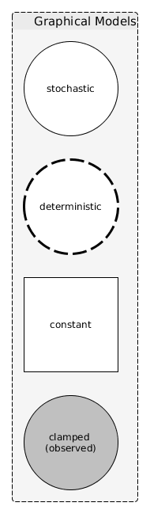
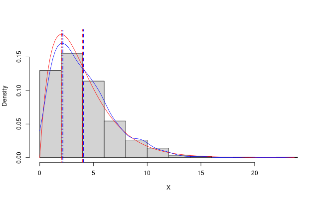
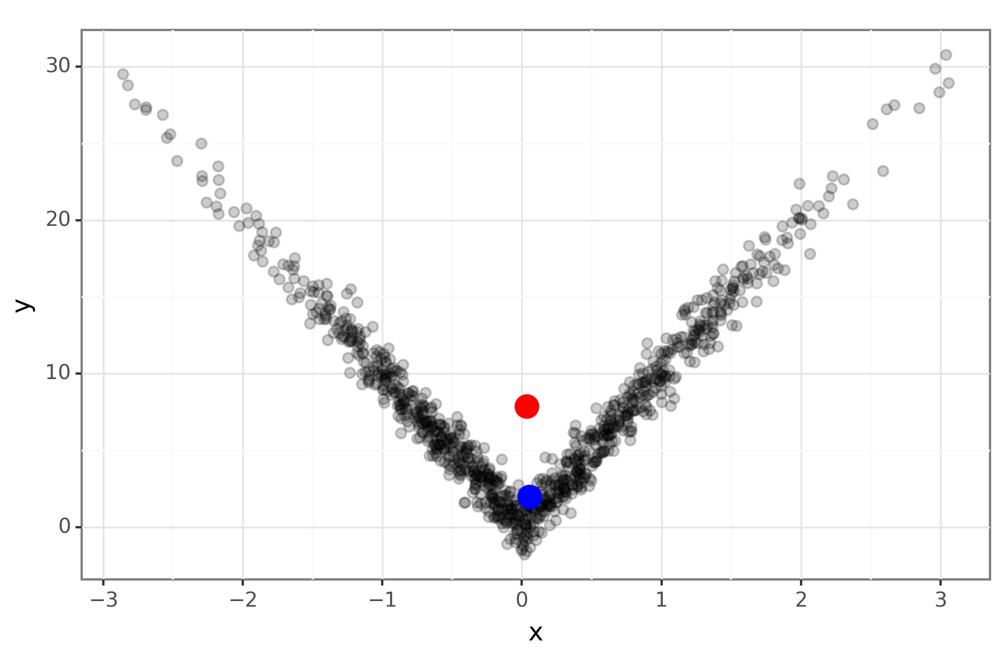
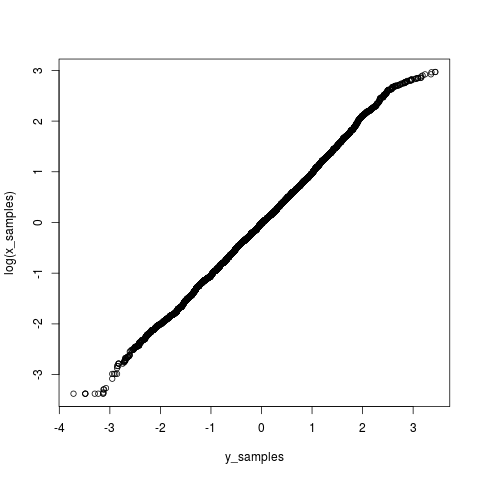
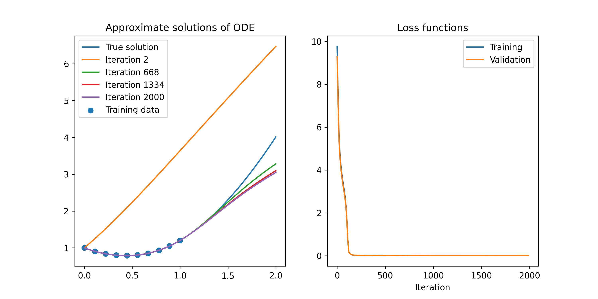

Statistics
Table of Contents
- Bayesian statistics
- Statistics notes
- GLM: Negative binomial
- Fisher information
- Is it statistically significant
- Empirical Distribution Function
- The bootstrap
- Linear regression
- Profile likelihood function
- TODO Student's t-test
- TODO Wilcoxon signed-rank test
- TODO Mann–Whitney U test
- TODO Kruskal–Wallis H test
- Contingency tables
- Linear Mixed-effects Models
- Moment closure for CTMC processes
- The Law of the unconscious statistician
- TODO Bland-Altman plot
- Further reading
- Machine learning notes
- Data notes
Bayesian statistics
Graphical models
Figure 1 is an example of a notation for graphical models.

Figure 1: Example of the notation that might be used to represent a graphical model
Gaussian approximation to posterior
Consider a posterior distribution where the mode is at \(\theta^{*}\) and the Hessian matrix at this point is \(h''(\theta^{*})\). If we consider a multivariate Gaussian density, we can see that it will have its mode at the mean, \(\mu\), and, assuming a covariance matrix, \(\Sigma\), the density will have a Hessian of \(-\Sigma^{-1}\) at the mode. This motivates the Gaussian approximation at the mode of the posterior. Also see Fisher information.
Maximum a posteriori (MAP) estimation
Example: univariate data in R
The following snippet produes Figure 2. This
demonstrates how you can approximate the MAP from a posterior sample
in a simple way using the stats::density function in R. It also
demonstrates why the mean might not be the most characteristic value
to summarise a distribution with.

Figure 2: The mode and mean and PDF of the gamma(2, 0.5) distribution in red and the sample mean and approximate MAP in blue.
Set up the parameters of the example and set the seed to make this reproducible.
set.seed(7) num_samples <- 1e3 true_shape <- 2 true_rate <- 0.5 xs <- rgamma(n = num_samples, shape = true_shape, rate = true_rate)
Compute the mean and mode from the known expressions and then use the
stats::density function to approximate the mode of the sample.
true_mean <- true_shape / true_rate true_mode <- (true_shape - 1) / true_rate emp_pdf <- density(xs, from = 0, to = max(xs), n = 100) emp_mean <- mean(xs) emp_mode <- emp_pdf$x[which.max(emp_pdf$y)]
Visualise this to produce the image in Figure 2.
x_mesh <- seq(from = 0, to = max(xs), length = 100) pdf_mesh <- dgamma(x = x_mesh, shape = true_shape, rate = true_rate) png('../resources/map-example.png', width = 1.62 * 400, height = 400) hist(xs, 15, prob = TRUE, ylim = range(pdf_mesh), main = NA, xlab = 'X') lines(x_mesh, pdf_mesh, col = 'red') lines(emp_pdf$x, emp_pdf$y, col = 'blue') abline(v = true_mean, col = 'red', lty = 2, lwd = 2) abline(v = emp_mean, col = 'blue', lty = 2, lwd = 2) abline(v = true_mode, col = 'red', lty = 4, lwd = 2) abline(v = emp_mode, col = 'blue', lty = 4, lwd = 2) dev.off()
Example: bivariate data in Python

Figure 3: The mode (blue) and mean (red) of some bivariate data.
import numpy as np from scipy import stats import pandas as pd from plotnine import *
Simulate some data from a unimodal distribution with interesting structure.
n = 1000 x = stats.norm().rvs(size=n) y = stats.norm().rvs(size=n) + 10*np.abs(x) data_mat = np.vstack([x, y])
Compute an approximate MAP by getting the data point that maximises the KDE. This avoids needing to run an optimiser and gives a possible value.
kernel = stats.gaussian_kde(data_mat) kernal_pdf_vals = kernel(data_mat) idx = kernal_pdf_vals.argmax() map_df = pd.DataFrame({'x':x[idx], 'y':y[idx]}, index=[0])
Generate a plot
mean_df = pd.DataFrame({'x':x.mean(), 'y':y.mean()}, index=[0]) data_df = pd.DataFrame({'x':x, 'y':y}) demo_p9 = (ggplot(mapping=aes(x='x', y='y')) + geom_point(data_df, shape='o', size = 2, alpha=0.2) + geom_point(mean_df, size=5, color='red') + geom_point(map_df, size=5, color='blue') + theme_bw()) demo_p9.save('../resources/map-example-2.png', height=4, width=6, dpi=300)
MCMC
See Chib and Greenberg (1995) for a timeless introduction to the Metropolis-Hasting algorithm.
Parameter transformation
You want to sample \(x\) which has density \(f\) but the MCMC samples are butting up against the edge of the support. For example, we have \(X\sim \text{Lognormal}(0,1)\).
library(mcmc) library(coda) set.seed(1) mcmc_samples <- function(obj) { as.mcmc(metrop(obj, 1, 10000)$batch) } posterior <- function(x) { dlnorm(x = x, meanlog = 0, sdlog = 1, log = TRUE) } x_samples <- mcmc_samples(posterior)
But the sampler keeps jumping into the negative numbers which is a problem. So you might consider \(Y = log(X)\) as this takes values on the whole real line. We need to derive the posterior distribution for this, \(g\). Note
\[ \left|g(y)dy\right| = \left|f(x)dx\right|, \]
put another way,
\[ g(y) = f(x(y)) \left|\frac{dx(y)}{dy}\right|. \]
So, if we let \(x = \exp(y)\), then the Jacobian is just \(\exp(y)\), and when we take the logarithm to get the log-posterior this becomes just \(y\).
y_posterior <- function(y) { posterior(exp(y)) + y } y_samples <- mcmc_samples(y_posterior)
Then a Q-Q plot of the logarithm of the \(X\) samples and the \(Y\) samples suggests we have gotten this correct. The tails are slightly different because the second sampler has been able to explore smaller and larger values more efficiently.

Posterior summaries
The bayestestR provides a range of ways to summarise a sample from a posterior distribution. The following demonstrates how to compute the \(95\%\) highest posterior density interval.
library(bayestestR) xs <- rnorm(10000) tmp <- hdi(xs, ci = 0.95) my_hpdi <- c(tmp$CI_low, tmp$CI_high)
Note that the coda package also provides a similar function
(HPDinterval) which will compute highest posterior density credible
intervals.
Statistics notes
GLM: Negative binomial
Setting up the data
Note that with the log-link function, the true intercept should be 1 and the coefficients should be 1, -1 and 0. The true size parameter of the negative binomial distribution is 0.5.
set.seed(1) x1 <- runif(n = 100, min = 0, max = 5) x2 <- runif(n = 100, min = 0, max = 5) x3 <- runif(n = 100, min = 0, max = 5) y_mean <- exp(1 + 1 * x1 - 1 * x2) y <- rnbinom(n = 100, mu = y_mean, size = 0.5) df <- data.frame(y = y, x1 = x1, x2 = x2, x3 = x3)
Fitting the model
The following demonstrates that with this data set the coefficients are well estimates as is the size parameter of the negative binomial distribution. The intercept is less well estimates.
library(MASS) glm_fit <- glm.nb(y ~ ., data = df) summary(glm_fit) confint(glm_fit)
As a point of comparison we can fit a Poisson model.
glm_fit_2 <- glm(y ~ ., data = df, family = poisson)
In the Poisson model the residual deviance is far far larger than the residual degrees of freedom (they were similar in the negative binomial model) which makes sense since the data should be over-dispersed with respect to the Poisson distribution.
Fisher information
For a random variable, \(X\) with distrtibution \(f(X;\theta)\) the score function is
\[ s(X; \theta) = \frac{\partial}{\partial\theta} \log f(X:\theta). \]
Under some mild assumptions, the mean value of \(s(X; \theta)\) (when viewed as a function of \(X\)) is zero.
The Fisher information is defined as the variance of the score and denoted \(\mathcal{I}(\theta)\):
\[ \mathcal{I}(\theta) = \mathbb{E}\left[ \left(\frac{\partial}{\partial\theta} \log f(X:\theta) \right)^{2} \right]. \]
It can be shown that the Fisher information is equal to
\[ -\mathbb{E}\left[ \frac{\partial^{2}}{\partial\theta^{2}} \log f(X:\theta) \right] \]
which can be more convenient to work with.
Is it statistically significant
Fair coin
Here is a table of values for testing whether the a binomial sample differs from fair trials at a significance level of 0.05.
| Trials | Lower | Upper |
|---|---|---|
| 20 | 6 | 14 |
| 40 | 14 | 26 |
| 60 | 22 | 38 |
| 80 | 31 | 49 |
| 100 | 40 | 60 |
| 200 | 86 | 114 |
| 400 | 180 | 220 |
| 600 | 276 | 324 |
| 800 | 372 | 428 |
| 1000 | 469 | 531 |
Coverage of credible interval
Suppose you have a way to estimate a parameter and you want to check if the coverage is as expected. You can test the null hypothesis that the coverage is the specified parameter in a frequentist way using the following function.
#' Hypothesis test on the binomial probability. #' #' @param x_obs integer number of successes observed. #' @param size integer number of tests carried out. #' @param prob probability of success in each test #' calibration_test <- function(x_obs, size, prob=0.95) { pmf_vals <- dbinom(x = 0:size, prob = prob, size = size) obs_prob <- dbinom(x = x_obs, prob = prob, size = size) mask <- pmf_vals <= obs_prob p_val <- sum(pmf_vals[mask]) list( p_val = p_val, reject_null = p_val < 0.05 ) }
For example, suppose you simulated and estimated 50 times and 46 of the intervals contained the true parameter, then you could not reject the null hypothesis that the \(95\%\) coverage is correct.
> calibration_test(46, size = 50, prob = 0.95) $p_val [1] 0.316537 $reject_null [1] FALSE
If instead you only had 44 of the intervals containing the parameter, then you could reject this null hypothesis:
> calibration_test(44, size = 50, prob = 0.95) $p_val [1] 0.03777617 $reject_null [1] TRUE
Empirical Distribution Function
Let \(X_1,\dots,X_n\sim F\) IID on \(\mathbb{R}\), then the empirical distribution function (EDF) is
\[ \hat{F}_n(x) = \frac{1}{n}\sum I(X_i \leq x) \]
where \(I\) is the indicator function. Linearity shows
\[ \mathbb{E}\hat{F}_n(x) = F(x) \]
and basic properties of variance and the Bernoulli distribution shows
\[ \mathbb{V}\hat{F}_n(x) = \frac{1}{n} F(x) (1 - F(x)). \]
The EDF converges to the CDF in probability (which can be observed from Markov's inequality.) The DKW inequality bounds this convergence which allows for the construction of confidence bounds on the EDF. A functional \(T : F \mapsto \theta\) is called a statistical functional. The plug-in estimator of \(\theta\) is simply \(T(\hat{F}_n)\).
The bootstrap
The bootstrap is a simulation based method to estimate standard errors and confidence intervals (there is a standard R package called boot.) Unlike the jackknife the bootstrap has access to the distribution of a statistic rather.
Consider a statistic \(T\) which is a function of a sample of \(X_i\sim F\); we want to compute \(\mathbb{V}_F(T)\). The subscript \(F\) is to indicate that this is with respect to the distribution \(F\). Let \(\hat{F}\) be the empirical distribution function (EDF) of the \(X_i\). The bootstrap uses \(\mathbb{V}_F(T)\) to approximate \(\mathbb{V}_{\hat{F}}(T)\) which is then itself estimated via simulation.
The simulation typically is just sampling from the EDF with replacement, and we can always run more simulation to get an arbitrarily good approximation of \(\mathbb{V}_{\hat{F}}(T)\) (there are \(\binom{n + n - 1}{n}\) potential datasets to sample here, for a dataset of size \(n=140\) that is already the number of atoms in the known universe.) The real source of error is how well \(\hat{F}\) approximate \(F\).
In the parametric bootstrap, rather than sampling from the EDF of the data, a sample is generated from the parametric distribution parameterised by the estimated parameter value.
Linear regression
Linear regression with lm
The formulas used to specify a model in R use Wilkinson-Rogers notation.
Consider \(y = \alpha + \beta x + \epsilon\). Often estimators will assume that
the \(\epsilon\) are IID normal random variables. To test whether the
\(\epsilon\) are homoscedastic one might use the Breusch-Pagan test. This is
available in R via lmtest::bptest. To test whether the errors follow a normal
distribution, a sensible first pass would be to generate a QQ-plot. But if a
formal method is required there is the stats::shapiro.test function for
normality.
Assuming that for the most part the assumptions appear to be valid, we might
dive deeper into the data. The leverage of a datum can be thought of as the
potential to influence parameters and can be calculated with stats::hatvalues.
However, high leverage is not necessarily a bad thing unless it is also an
outlier. One way to measure how plausible a measurement is to have arisen from
the model is by considering its standardised residual, rstandard.
Combining leverage and residual into a single measure, is the goal of the Cook's
distance which is one of the summaries produced by plot.lm. A rule of thumb is
that you want the Cook's distance to be not greater than \(4 N^{-1}\) for a
dataset of size \(N\).
Profile likelihood function
The profile likelihood is a lower dimensional version of the likelihood function. Consider a likelihood function \(\mathcal{L}(\theta)\) where \(\theta = (\psi,\lambda)\) where \(\lambda\) are nuisance parameters. The profile likelihood is
\[ \mathcal{L}_{\text{profile}}(\psi) := \max_{\lambda} \mathcal{L}(\psi,\lambda). \]
TODO Student's t-test
Null is specific mean
t.test(rnorm(100, mean=1), mu = 0)$p.value
Null is different mean (assumed equal variance)
t.test(rnorm(100, mean = 0), rnorm(100, mean = 1), var.equal = TRUE)$p.value
Null is different mean (Welch)
t.test(rnorm(100, mean = 0), rnorm(100, mean = 1, sd = 2), var.equal = FALSE)$p.value
TODO Null is different mean but values are paired
TODO Wilcoxon signed-rank test
Roughly, it plays the role of a nonparametric paired t-test.
TODO Mann–Whitney U test
Roughly, it plays the role of a nonparametric t-test.
TODO Kruskal–Wallis H test
Roughly, it extends the Mann–Whitney U test to more than two groups.
Contingency tables
An example in R
A contingency table counts the number of times that a particular combination of catagorical variables occur. For example, we can simulate a data set of catagorical variables as follows
set.seed(1) x <- sample(1:3, 1000, replace = TRUE) y <- sample(letters[1:3], 1000, replace = TRUE) df <- data.frame(x, y)
Then we can create a contingency table from this with the xtabs function.
tab <- xtabs(~ x + y, data = df)
> print(tab) y x a b c 1 131 109 111 2 100 122 117 3 100 99 111
The null hypothesis test that we are interested in is that there is no
association between the catagorical variables x and y. If each variable was
binary we could use Fisher's exact test, but since there are more, and there are
\(\geq 10\) observations in each catagory a $χ2$-test is acceptable.
> print(chisq.test(tab))
Pearson's Chi-squared test
data: tab
X-squared = 5.6178, df = 4, p-value = 0.2296
Since the variables were simulated independently the $p$-value is, not surprisingly, large enough that it would not be considered significant.
What actually happens
Let \(f_{ij}\) be the value in the \(ij\)-th cell of the contingency table and \(e_{ij}\) the expected value assuming that the observations are distributed such that the catagorical variables are independent. Consider the following statistic:
\[ \sum_{(i,j)} \frac{ (f_{ij} - e_{ij})^2 }{ e_{ij} } \]
This statistic has a \(\chi^2\)-distribution with \((I-1)(J-1)\) degrees of freedom where \(I\) and \(J\) are the number of distinct values each variable takes.
Linear Mixed-effects Models
The Laird-Ware form of a linear mixed effect model (LMM) for the \(j\)th observation in the \(i\)th group of measurements is as follows:
\[ Y_{ij} = \beta_1 + \sum_k \beta_k X_{kij} + \sum_{k} \delta_{ki} Z_{kij} + \epsilon_{ij}. \]
- the \(\beta_k\) are the fixed effect coefficients and the \(X_{kij}\) the fixed effect covariates,
- the \(\delta_k\) are the random effect coefficients and the \(Z_{kij}\) the random effect covariates, it is important to note that while the \(beta_k\) are treated as parameters to be estimated, the \(\delta_k\) are treated as random variables and it is their distribution that is estimated.
- the \(\epsilon_{ij}\) is a random variable.
- the distribution of the random effect coefficients is a (zero-mean) multivariate normal distribution parameterised by \(\psi\) and the random noise \(\epsilon\) comes from a zero-mean normal distribution with variance parameterised by \(\sigma^2\).
Model derivation
One way to go about deriving a LMM for a particular data set is to consider a model at the individual level and then assume some random structure on the parameters which varies at the group level. Expanding this out will lead to a model in the Laird-Ware form. The random variables in the model at the group level creates the random effects terms in the Laird-Ware form where the constant parts of the parameters form the fixed effects.
Model notation
The lme4 package in R introduces some syntax for describing these models.
(expr | factor)is used to indicate that the expressionexprrepresents random effects and that these values should be common acrossfactor. By default, this assumes that there are correlations between the random effects.(expr || factor)is another way to specify that theexprare random effects, but assumes that they are uncorrelated.
Moment closure for CTMC processes
Consider a random process, \(X_t\) which is a CTMC on \(\mathbb{N}_0\) where the only possible transitions from \(n\) are to \(n\pm 1\), potentially with an absorbing state at zero. Supposing from state \(n\) the process moves to state \(n+1\) at rate \(a_n\) and to state \(n-1\) at rate \(b_n\) the forward equations for the distribution are
\[ \frac{d}{dt} p_n(t) = p_{n-1}(t)a_{n-1} - p_{n}(t)a_n + p_{n+1}(t)b_{n+1} - p_{n}(t)b_{n}. \]
We multiple both sides of the equation through by \(n\) and sum in \(n\) over \(\mathbb{N}_0\) to get everything in terms of expected values of functions of \(X_t\).
\[ \frac{d}{dt} \mathbb{E}[X_t] = \mathbb{E}[((X_t + 1) - X_t) a_{X_t}] + \mathbb{E}[((X_t - 1) - X_t) b_{X_t}] \]
The "trick" is to note that you can write the first and third sums as \(\sum (n+1) p_{n}(t) a_{n}\) and \(\sum (n-1) p_n b_n\). Similarly, for higher order moments this generalises as
\[ \frac{d}{dt} \mathbb{E}[X_t^k] = \mathbb{E}[((X_t + 1)^k - X_t^k) a_{X_t}] + \mathbb{E}[((X_t - 1)^k - X_t^k) b_{X_t}]. \]
Recall the binomial formula,
\[ (x+y)^k = \sum_{i = 0}^{k} \binom{k}{i} x^i y^{k-i}. \]
This can then be used to derive the differential equations for the moments.
\[ \frac{d}{dt} \mathbb{E}[X_t^k] = \sum_{i = 0}^{k-1} \binom{k}{i} \left( \mathbb{E}[ X_t^i a_{X_t} ] + (-1)^{k-i} \mathbb{E}[ X_t^i b_{X_t} ] \right) \]
Note that the sums are from \(0\) to \(k-1\) but the binomial coefficients use the full \(k\). Given this expression, any polynomial \(a_n\) and \(b_n\) are candidates for the application of a moment closure, which essentially just entails either truncating the cumulants, or assuming a distributional form which expresses higher moments in terms of lower ones.
The Law of the unconscious statistician
This refers to the equation
\[ \mathbb{E}g(X) = \int g(x) f_{X}(x) dx. \]
The name derives from the fact that this is so often treated as self-evident rather than being viewed as a theorem.
This result is particularly useful when carrying out MCMC in a transformed parameter space as described in the notes on changing parameterisation above.
TODO Bland-Altman plot
Given to ways to measure something, a Bland-Altman plot is a way to compare them.
Further reading
Machine learning notes
The first rule of machine learning: Start without machine learning
— Eugene Yan (@eugeneyan) September 10, 2021
Gaussian processes
TODO Gaussian process regression (a.k.a. Kriging)
- Construct a multi-variate normal distribution with dimensionality equal to the number of training points and test points and condition it upon the training data to get the distribution over the test data.
Using neural networks to solve differential equations
Lagaris et al (1998) describe a method to solve differential equations numerically with neural networks. The simplest example they use is the following differential equation:
\[ \frac{d\Psi}{dx} + \left(x + \frac{1 + 3x^{2}}{1 + x + x^{3}}\right) \Psi = x^{3} + 2x+x^{2}\frac{1 +3x^{2}}{1 + x + x^{3}} \]
with the initial condition that \(\Psi(0) = A\) for \(0\leq x\leq 1\). The solution to this equation is available in closed form:
\[ \Psi = \frac{e^{-x^{2} / 2}}{1 + x + x^{3}} + x^{2}. \]
The trial solution proposed is
\[ \Psi_{t} = A + x N(x,p) \]
where \(N\) is a neural network parameterised by \(p\). This trial solution satisfied the initial condition for all values of \(p\) which leads to an unconstrained optimisation problem. The loss function is
\[ \text{loss}(p) = \sum_{i} \left\{ \frac{d\Psi_{t}}{dx_{i}} + \left(x_{i} + \frac{1 + 3x_{i}^{2}}{1 + x_{i} + x_{i}^{3}}\right) \Psi_{t} - \left[ x_{i}^{3} + 2x_{i}+x_{i}^{2}\frac{1 +3x_{i}^{2}}{1 + x_{i} + x_{i}^{3}} \right] \right\}^{2} \]
for some set of trial points \(x_{i}\). There are closed forms available for both the loss function and its gradient which opens the way for multiple optimisation routines to be applied.
Figure 4 shows the result of less than a minute of training with gradient descent with only ten test points.

Figure 4: Replication of the first example problem from Lagaris et al (1998)
The script that generated the image in Figure 4 is shown below.
import tensorflow as tf import numpy as np import matplotlib.pyplot as plt np.random.seed(1) H = 10 mesh_size = 10 # We need to select some points to train the model on and some to test it on. # It looks like you need to have this as a mutable value if you want to compute # gradients. train_mesh = tf.Variable(np.linspace(0, 1, mesh_size), dtype=np.float64) test_mesh = tf.Variable(np.linspace(0.01, 0.99, mesh_size), dtype=np.float64) # We need to select some points to plot the resulting approximation on. plt_mesh = np.linspace(0, 2, 100) # We need to record the solution at multiple points of the training loop to # test that it is infact converging so something sensible. psi_val_stash = [] iter_stash = [] loss_stash = [] vldt_stash = [] @tf.function def psi_truth(x): """Solution of the differential equation.""" return tf.exp(-0.5 * x**2) / (1 + x + x**3) + x**2 class MyModel(tf.Module): """This class respresents the approximation to the solution.""" def __init__(self, psi_0, num_units, **kwargs): """Construct approximate solution with a hard-coded IC.""" super().__init__(**kwargs) self.IC_A = psi_0 self.w = tf.Variable(np.random.randn(num_units)) self.u = tf.Variable(np.random.randn(num_units)) self.v = tf.Variable(np.random.randn(num_units)) def __call__(self, x): """Evaluate the approximation.""" # matrix with one datum per row l1 = tf.math.sigmoid(tf.tensordot(x, self.w, 0) + self.u) # We have encoded the IC using the method from Lagaris et al (1998), # although there are other formulations that are used in contemporary # implementations. Attempting to use a 1-exp(-x) function to get the IC # constraint did not yield any improvement. l2 = self.IC_A + x * tf.tensordot(l1, self.v, 1) return l2 psi_model = MyModel(tf.constant(1.0, dtype=np.float64), H) num_iters = 2000 learning_rate = 0.050 x = train_mesh def loss_fn(psi_dash, psi, x): return tf.reduce_sum((psi_trial_dash + (x + (1 + 3 * x**2) / (1 + x + x**3)) * psi_trial - (x**3 + 2 * x + x**2 * (1 + 3 * x**2) / (1 + x + x**3)))**2) for iter_num in range(num_iters): # The gradient evaluations need to be within to the loop for TF to # understand how they work. with tf.GradientTape() as t2: with tf.GradientTape() as t1: psi_trial = psi_model(x) psi_trial_dash = t1.gradient(psi_trial, x) # The loss function needs to know the differential equation. loss = loss_fn(psi_trial_dash, psi_trial, x) vldt_val = loss_fn(psi_trial_dash, psi_trial, test_mesh) loss_w_dash, loss_u_dash, loss_v_dash = t2.gradient(loss, [psi_model.w, psi_model.u, psi_model.v]) psi_val_stash.append(psi_model(plt_mesh).numpy()) psi_model.w.assign_sub(learning_rate * loss_w_dash) psi_model.u.assign_sub(learning_rate * loss_u_dash) psi_model.v.assign_sub(learning_rate * loss_v_dash) if iter_num % 10 == 0: iter_stash.append(iter_num) loss_stash.append(loss.numpy()) vldt_stash.append(vldt_val.numpy()) print("iteration: {i}\tloss: {l}\tlearning rate: {r}".format(i=iter_num, l=loss.numpy(), r=learning_rate)) if iter_num % 1000 == 0 and iter_num > 0: learning_rate /= 1.5 fig, axs = plt.subplots(1, 2, figsize=(10, 5)) axs[0].plot(plt_mesh, psi_truth(plt_mesh), label="True solution") for ix in range(1, num_iters, num_iters // 3): axs[0].plot(plt_mesh, psi_val_stash[ix], label="Iteration {n}".format(n=ix+1)) axs[0].scatter(train_mesh, psi_truth(train_mesh), label="Training data") axs[0].legend(loc="upper left") axs[0].set_title("Approximate solutions of ODE") axs[1].plot(iter_stash, loss_stash, label="Training") axs[1].plot(iter_stash, vldt_stash, label="Validation") axs[1].set_title("Loss functions") axs[1].set_xlabel("Iteration") axs[1].legend(loc="upper right") # fig.show() fig.savefig("out/lagaris-1998.png", dpi=300)
Initialisation
- When initialising the weights of a neural network, keep in mind that we want the linear map of the input to take a value that has values roughly compatible with a standard Gaussian. As a result, if you have \(n\) (standardised) input variables, you might choose to initialise the weights from \(N(0,1\sqrt{n})\).
Data notes
WebPlotDigitizer
https://github.com/ankitrohatgi/WebPlotDigitizer
This tool can be used to extra data from a plot in a figure in paper! If you want to extract a figure from a PDF of a paper, see my Inkscape notes here.